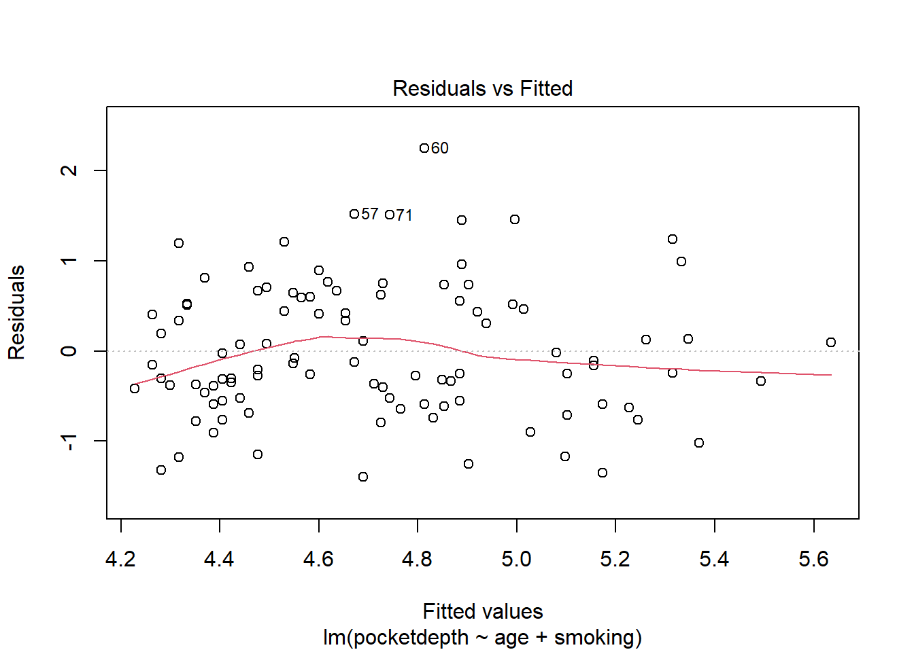

Medical Statistics – Answers lab 6
Part 1: Pearson’s correlation coefficient and simple linear regression
Pearson’s Correlation Coefficient
Pearson's product-moment correlation
data: pockets$age and pockets$pocketdepth
t = 3.9647, df = 98, p-value = 0.0001398
alternative hypothesis: true correlation is not equal to 0
95 percent confidence interval:
0.1891831 0.5295346
sample estimates:
cor
0.371786 Fitting a Simple Linear Regression Model
Call:
lm(formula = pocketdepth ~ age, data = pockets)
Residuals:
Min 1Q Median 3Q Max
-1.49289 -0.44376 -0.07903 0.49597 2.13335
Coefficients:
Estimate Std. Error t value Pr(>|t|)
(Intercept) 3.85872 0.22862 16.878 < 2e-16 ***
age 0.02054 0.00518 3.965 0.00014 ***
---
Signif. codes: 0 '***' 0.001 '**' 0.01 '*' 0.05 '.' 0.1 ' ' 1
Residual standard error: 0.7535 on 98 degrees of freedom
Multiple R-squared: 0.1382, Adjusted R-squared: 0.1294
F-statistic: 15.72 on 1 and 98 DF, p-value: 0.0001398Assumption Checking
Normality of Residuals
Homoscedasticity and linearity
Part 2: ANCOVA (Analysis of Covariance)
Exploratory Data Analysis
Fitting the ANCOVA Model
R output
Call:
lm(formula = pocketdepth ~ age + alcohol, data = pockets)
Residuals:
Min 1Q Median 3Q Max
-1.35037 -0.45299 -0.06626 0.39746 1.76573
Coefficients:
Estimate Std. Error t value Pr(>|t|)
(Intercept) 4.165461 0.270688 15.388 < 2e-16 ***
age 0.014849 0.005248 2.829 0.00568 **
alcohol1–2 glasses/day -0.394551 0.172383 -2.289 0.02428 *
alcohol>2 glasses/day 0.364565 0.188347 1.936 0.05586 .
---
Signif. codes: 0 '***' 0.001 '**' 0.01 '*' 0.05 '.' 0.1 ' ' 1
Residual standard error: 0.7069 on 96 degrees of freedom
Multiple R-squared: 0.257, Adjusted R-squared: 0.2338
F-statistic: 11.07 on 3 and 96 DF, p-value: 2.638e-06SPSS output
Anova Table (Type III tests)
Response: pocketdepth
Sum Sq Df F value Pr(>F)
(Intercept) 118.337 1 236.8042 < 2.2e-16 ***
age 4.001 1 8.0055 0.0056789 **
alcohol 7.669 2 7.6729 0.0008104 ***
Residuals 47.974 96
---
Signif. codes: 0 '***' 0.001 '**' 0.01 '*' 0.05 '.' 0.1 ' ' 1Model Diagnostics
Part 3: Interactions in ANCOVA
Fitting the Interaction Model
Call:
lm(formula = pocketdepth ~ age * alcohol, data = pockets)
Residuals:
Min 1Q Median 3Q Max
-1.35020 -0.45321 -0.06748 0.39755 1.76684
Coefficients:
Estimate Std. Error t value Pr(>|t|)
(Intercept) 4.161e+00 3.811e-01 10.921 <2e-16 ***
age 1.494e-02 7.747e-03 1.928 0.0569 .
alcohol1–2 glasses/day -3.862e-01 5.142e-01 -0.751 0.4544
alcohol>2 glasses/day 3.690e-01 6.538e-01 0.564 0.5738
age:alcohol1–2 glasses/day -2.082e-04 1.214e-02 -0.017 0.9863
age:alcohol>2 glasses/day -9.585e-05 1.395e-02 -0.007 0.9945
---
Signif. codes: 0 '***' 0.001 '**' 0.01 '*' 0.05 '.' 0.1 ' ' 1
Residual standard error: 0.7144 on 94 degrees of freedom
Multiple R-squared: 0.257, Adjusted R-squared: 0.2175
F-statistic: 6.503 on 5 and 94 DF, p-value: 3.102e-05Anova Table (Type III tests)
Response: pocketdepth
Sum Sq Df F value Pr(>F)
(Intercept) 60.865 1 119.2592 < 2e-16 ***
age 1.897 1 3.7169 0.05688 .
alcohol 0.784 2 0.7678 0.46691
age:alcohol 0.000 2 0.0001 0.99985
Residuals 47.974 94
---
Signif. codes: 0 '***' 0.001 '**' 0.01 '*' 0.05 '.' 0.1 ' ' 1Part 4: Relationship Between Smoking and Pocket Depth
In addition to information about alcohol consumption, the dataset also contains information about smoking habits. Explore the relationship between smoking and pocket depth, and how it interacts with age. You can use the same approach as in the previous sections to fit models, test for significance, and check assumptions.
Exploratory Data Analysis
Fitting the ANCOVA Model
Call:
lm(formula = pocketdepth ~ age + smoking, data = pockets)
Residuals:
Min 1Q Median 3Q Max
-1.3995 -0.5308 -0.1453 0.5331 2.2462
Coefficients:
Estimate Std. Error t value Pr(>|t|)
(Intercept) 3.89031 0.22660 17.168 < 2e-16 ***
age 0.01776 0.00534 3.326 0.00125 **
smokingSmoker 0.32371 0.17709 1.828 0.07063 .
---
Signif. codes: 0 '***' 0.001 '**' 0.01 '*' 0.05 '.' 0.1 ' ' 1
Residual standard error: 0.7447 on 97 degrees of freedom
Multiple R-squared: 0.1669, Adjusted R-squared: 0.1497
F-statistic: 9.718 on 2 and 97 DF, p-value: 0.0001423The p-value for the smoking variable in the ANOVA table is 0.071, indicating that the smoking variable is not significantly associated with pocketdepth after accounting for age.
Model Diagnostics

The plots do not show any violations of the normality or homoscedasticity assumptions.
Fitting the Interaction Model
Call:
lm(formula = pocketdepth ~ age * smoking, data = pockets)
Residuals:
Min 1Q Median 3Q Max
-1.4160 -0.5382 -0.1353 0.5514 2.2096
Coefficients:
Estimate Std. Error t value Pr(>|t|)
(Intercept) 3.778052 0.264041 14.309 < 2e-16 ***
age 0.020622 0.006360 3.243 0.00163 **
smokingSmoker 0.772509 0.567866 1.360 0.17690
age:smokingSmoker -0.009779 0.011755 -0.832 0.40751
---
Signif. codes: 0 '***' 0.001 '**' 0.01 '*' 0.05 '.' 0.1 ' ' 1
Residual standard error: 0.7459 on 96 degrees of freedom
Multiple R-squared: 0.1729, Adjusted R-squared: 0.147
F-statistic: 6.689 on 3 and 96 DF, p-value: 0.0003787Anova Table (Type III tests)
Response: pocketdepth
Sum Sq Df F value Pr(>F)
(Intercept) 113.894 1 204.7350 < 2.2e-16 ***
age 5.849 1 10.5145 0.001629 **
smoking 1.029 1 1.8506 0.176898
age:smoking 0.385 1 0.6921 0.407507
Residuals 53.405 96
---
Signif. codes: 0 '***' 0.001 '**' 0.01 '*' 0.05 '.' 0.1 ' ' 1The p-value for the interaction term age:smoking is 0.407, indicating that there is no significant interaction between age and smoking in predicting pocketdepth.